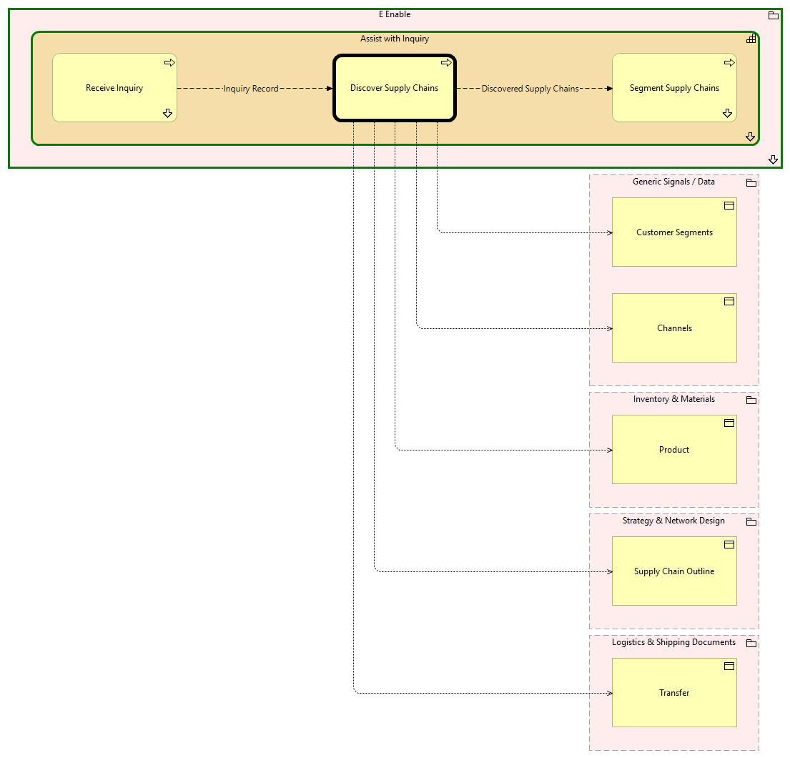

Discover Supply Chains - Context
(
)

generated_by
build_archi_xml.py::gen_proc_node_context_view
generator_path
pedro/capabilities/build_archi_xml_assign/build_archi_xml_assign.py
run_at
2026-10-19T21:03:31
view_type
process_context
E Enable
Assist with Inquiry
Discover Supply Chains
Segment Supply Chains
Segment Supply Chains - Context
Receive Inquiry
Receive Inquiry - Context
Assist with Inquiry - Processes
E Enable - Processes
Generic Signals / Data
Channels
Customer Segments
Inventory & Materials
Product
Strategy & Network Design
Supply Chain Outline
Logistics & Shipping Documents
Transfer
Discovered Supply Chains
Discover Supply Chains
Segment Supply Chains
Discover Supply Chains
Channels
Discover Supply Chains
Customer Segments
Discover Supply Chains
Product
Discover Supply Chains
Supply Chain Outline
Discover Supply Chains
Transfer
Inquiry Record
Receive Inquiry
Discover Supply Chains